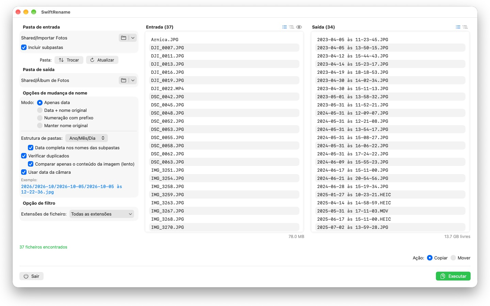
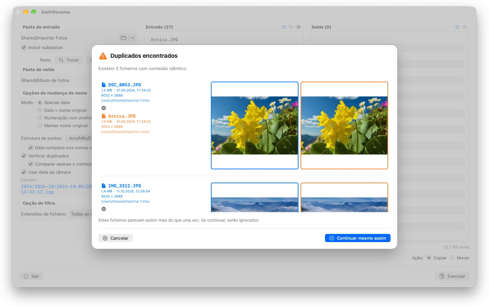

Renomeie centenas de fotos e ficheiros de uma só vez — por data da câmara, numerados ou em pastas de ano e mês. Os duplicados são detetados e ignorados automaticamente.



O SwiftRename é uma ferramenta poderosa para renomear, copiar e mover ficheiros em lote no seu Mac. Escolha uma pasta, defina o aspeto dos novos nomes, confira a pré-visualização em tempo real — e avance.
24 idiomas: Deutsch · English · Español · Français · Italiano · Nederlands · Português · Svenska · Norsk · Suomi · Polski · Čeština · Hrvatski · Magyar · Română · Türkçe · Русский · Українська · فارسی · ไทย · 日本語 · 한국어 · 简体中文 · 繁體中文
MODOS DE MUDANÇA DE NOME
- Apenas data: dá aos ficheiros o nome da respetiva data (por exemplo, 2024-01-15 às 14-30-00)
- Data + nome original: antepõe a data e mantém o nome original
- Numeração com prefixo: numeração sequencial com um prefixo à sua escolha (por exemplo, Viagem_0001)
- Manter nome original: deixa os nomes intactos e apenas organiza os ficheiros em pastas
ESTRUTURA DE PASTAS
Organiza os ficheiros automaticamente em pastas por ano, mês ou dia — com a data completa no nome de cada subpasta, se preferir (por exemplo, 2026/2026-02/2026-02-20). Ficheiros que abrangem várias décadas recebem ainda pastas de década no topo. Ou escolha «Manter» para replicar a hierarquia de subpastas da pasta de origem no destino.
DATA DA CÂMARA
As fotos e os vídeos recebem o nome do momento em que foram realmente captados: o SwiftRename lê a data da câmara (EXIF) — a partir dos formatos RAW de todos os principais fabricantes de câmaras (Canon, Nikon, Sony, Fujifilm e muitos mais), bem como HEIC, JPEG, PNG, TIFF e os formatos de vídeo mais comuns. Se um ficheiro não tiver data da câmara, é usada a respetiva data de criação.
DETEÇÃO DE DUPLICADOS
Os duplicados são detetados pelo tamanho e pelo conteúdo do ficheiro — independentemente da data de criação, para que a mesma foto com um carimbo de data diferente não possa passar despercebida. Uma comparação de imagem opcional deteta até fotos que foram guardadas de novo por outras aplicações. As pré-visualizações em miniatura permitem comparar os dois ficheiros lado a lado; os duplicados são ignorados automaticamente.
MAIS FUNCIONALIDADES
- Copia ou move com um clique — incluindo renomear no mesmo sítio, dentro da mesma pasta
- Acesso rápido às pastas de entrada e de saída usadas recentemente
- Inclui subpastas; listas de ficheiros apresentadas de forma plana ou em árvore de pastas
- Filtra as extensões de ficheiro com seleção múltipla
- Pré-visualização em tempo real dos novos nomes antes de alterar seja o que for
- Desfazer e refazer operações inteiras (Cmd+Z)
- Indicação de progresso com o nome do ficheiro e a percentagem — pode cancelar a qualquer momento
- O espaço livre em disco é verificado antes de a operação começar
- Arrastar e largar pastas diretamente do Finder
Tudo permanece no seu Mac. Sem ligações à rede, sem contas, sem recolha de dados.
- Requer macOS 12 ou posterior
- 24 idiomas
- Suporte: SwiftAppsBavaria@gmx.net
Mais aplicações
sCollect
Organizar música, filmes, audiolivros, e-books e outras coleções numa biblioteca.
sCollectPlay
O leitor da biblioteca: reproduzir música, filmes, audiolivros e podcasts simplesmente de uma pasta, de um XML do iTunes ou de uma biblioteca do sCollect – sem alterar nada nas tags dos ficheiros.
sName2Date
Escrever a data do nome do ficheiro como data de captura em fotografias, filmes e gravações de áudio – para que um ficheiro como IMG_20240115_103000.jpg fique corretamente ordenado em qualquer gestor de fotografias.
sName2Date Lite
A edição para um ficheiro de cada vez: escrever a data do nome do ficheiro como data de captura numa fotografia, num filme ou numa gravação de áudio, defini-la manualmente, passar o nome para a notação ISO e desfazer tudo com ⌘Z – as mesmas capacidades do sName2Date, só que sem pastas inteiras.
sVectorLift
Abrir, ver e guardar clipart vetorial antigo como SVG – CorelDRAW, Windows Metafile e CGM.
sCollectPlay Lite
A edição simplificada do sCollectPlay: abrir simplesmente uma pasta, um XML do iTunes ou uma biblioteca do sCollect e reproduzir daí música, filmes, audiolivros e podcasts – com playlists, faixas de áudio e de legendas, câmara lenta e avanço imagem a imagem. Uma fonte por sessão; o navegador de colunas, as playlists próprias e as fontes usadas recentemente ficam reservados à versão completa.
sBikeBridge
Analisar voltas de bicicleta sem as carregar num portal: importar ficheiros FIT de qualquer ciclocomputador que grave neste formato, bem como GPX e TCX. As voltas ficam numa biblioteca própria no Mac – com mapa, potência e frequência cardíaca, fotografias e notas; os duplicados são detetados na importação. Indicadores por ano ou mês e filtros por distância, desnível acumulado e duração tornam as voltas comparáveis. Se desejado, o mapa também está disponível offline.